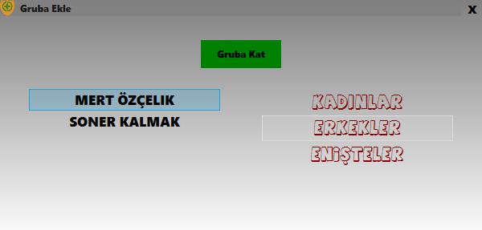
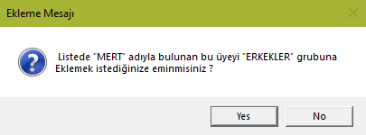

Bu pencere, gruptan çıkarılan üyeleri yada grubu silinmiş üyeleri tekrar guruba almak için kullanılır.(Grupsuz üyeler sıralamalarda listelenmemektedir.)
1- Pencere açıldıktan sonra 2 tane liste gözükür.1. liste üye isim ve soyisimleri, 2. liste grup isimleri olacaktır.
İlk önce bir gruba yerleştirilmesi istenilen üye seçilip sonra üyenin yerleşeceği grup seçilir
(üstlerine 1 kere tıklamak yeterlidir), üye ve grup seçildikten sonra seçilen üyenin seçilen gruba katılması için
'Gruba Kat' denilir.

2- Çıkan uyarı penceresine 'Evet' yada 'Hayır' denilir.
